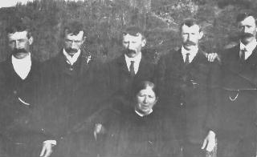

Click the arrow to go up a level to the directory for the Posting Pages.
Click the arrow to go up a level to the directory for the Posting Pages.
| Follow the above link or click the graphic below to visit the Homepage. |
 | Cullen Genealogy Posts
Co Roscommon, Ireland
|
Click here to make a posting for Co Roscommon, Ireland via e-mail
From: supernova8***btinternet.com
Further to post by Terence Cullen in Argentina - my wife's grandfather Thomas Cullen, born Geevagh 1874, had a brother Owen born 1871 died 1962 who married Catherine Waters and they had 17 children, which would certainly match the 17 children of "Man with Mustache" Owen with Eugene, Pat 'Clarke' plus 15 other children. Thomas and brother Owen ( and other siblings ) were born to Terrence Cullen and Elizabeth nee Nangle; Terrence to Owen Cullen ( living in Tullynure 1858 ) and Ann nee Lavin. That Owen may have had father Owen ( living in Tullynure 1824 & 1833 ). Would love to hear more from Terence in Argentina. Regards, Mike Dymond.
From: jjcullen***msn.com
The posting From: tcullen***cvtci.com.ar with the old photo is a familiar one. My Father, John Cullen, son of John Cullen ( 'Johnnie Odie' ) was one of the seventeen. All children of Owen Cullen, the one in the photo. That woman is their Mother. Of the seventeen a few still survive. Two, as in the blog were sent to America and given the name Clark. Their names, though, at the Ellis Island memorial are listed as Cullen. 'Pat Clark' ( Cullen ) became a Doctor and passed away a few years ago. His sister Mary Rotters is still alive and lives in the Midwest. If interested in more details please contact the blog.
From: turloj***gmail.com
I am Terence Michael Cullen, son of Eugene Cullen, son of Owen Cullen of Geevagh. I was born in the UK and now live in Argentina. I'd love to be able to trace back beyond Owen. I know that part of our family were called the Terrys. I, too, am Terry. Odd connection on your site from LittleRock, Ak: One Carol Cullen Terry makes a posting. Legend has it that one of my father's brothers was 'exported' there and became Pat Clark(e). I have a copy of a photo family legend calls The Men in Moustaces (photo below). I'd be delighted to contact anyone who recognises it. I'm not sure, but the one in the middle is Owen. My father, Eugene, was one of 15 in total, all prolific, too. Therefore there are many Cullens there in Roscommon, Sligo, Mayo and maybe Leitrim.

From: glynwilliam***gmail.com
I am trying to trace my mother's ancestry. Her name was Catherine ( Kit ) Sara Cullen, b. about 1907 and was one of five children - George and Jack, both became priests and went to Australia, and James and Molly. All I know about her father ( first name unknown ) was that he was was a music teacher and they lived in Roscommon. Any information would be very gratefully received. - William Glynn.
From: lrr49***lvcm.com
I hope that you can help me. I am searching for my great-grandfather. His name is Dominick Dugan. His wife's name is Mary. Between 1883 and 1890 they had four daughters: Bee, Mary, Helen, and Winifred. The girls were born in Ballaghedereen, Roscommon, Ireland. I have had no success in tracing this line any further back than my grandmother, Bee, and her sisters. I would appreciate any assistance you could give me. Thanks for your help.
From: scilla.cullen***lineone.net
I am very interested in the origin of my family's crest and motto. My great grandfather was Fred Cullen brother of Willie Cullen who were well known racehorse trainers at the Rosslare stud on the Curragh in the early part of the 20th Century. They were born in Roscommon. Fred married a Talbot but Willie remained unmarried. The family were presumably well to do as his obituary in the Irish Racing Times says that his family wanted him to become a doctor but he took up racehorse training instead. My grandfather, Francis Richard Cullen was killed steeplechasing in 1920 in England.
The family crest is a pelican gluming and the motto is "we live and die for those we love." and I have inherited the family signet ring with the crest. The only time this signet ring or crest has been seen was by my father in the USA in a bar when he glanced down at his neighbour's hand and said "your name is Cullen isn't it".
Can you tell me what the origins of this branch of the Cullen family are?
From: execpress***primus.com.au
My name is Gerry Cullen. I am now living in Australia. My father was John Cullen, born in Carrick, Ballinlough, County Roscommon, Ireland (1907-1981). His father was Dominick and also lived in Ballinlough. I presume he also was born there. Dominick had three sons, John (my father), Joseph (Josie) and Michael who emigrated and died in Boston. Dominick also had 5 daughters Baby (of Granlahan, Co. Roscommon), Kathleen, Josaphine, Tess and Annie (who died in Boston in 1918). Looking for information on Dominick or his wife so I can put together a family tree for my children or to make contact with anybody in the Roscommon area who would be willing to help compile a family history. My email address is execpress@primus.com.au
From: Franco2c***aol.com
Interested in any information on Patrick Cullen who lived in Srabragan townland along Loch Allen and Co. Leitrim border. Was tenant there in 1850 or earlier period to about 1870 when he presumedly died. He was succeeded by Francis Cullen. One son was John J. Cullen. See also post on page for Scotland.
From: CTerry***littlerock.state.ar.us
My name is Carol Cullen Terry, my father was John Joseph Cullen b 1911 Junction City Kansas, m "Eva" Sivage of Fayetteville AR in Neosha MO Dec 31, 1933; John's father was James Joseph Cullen b 1876 in either NY or Penn m Malinda Lucinda Coffee in Junction City Kansas around 1905, (James had joined the Army as a young man about 15 and was in the 7th Cavalry in Pureto Rico fighting in the Spanish American War and later was at Ft Riley Kansas just outside Junction City); James's father was Edward Cullen from Ireland, either Rosscommon or Mayo County( I think), m Anna Melvin, probably in Ireland, and came to NY about 1872 or 1873. Coming to NY with Edward and his wife and possibly 2 young daughers, were Edward's brother, James Cullen, and his wife Mary McGraff, and Edward's and James's sister, Mary, who later married Martin Doyle of Fayetteville NY. But that is as far as I can get!!
Do you have any information on any of these Cullens or can you recommend a choice of research? Thanks for any help you possibly can give me.
From: BJCPatty***aol.com
My greatgrandfather, Hugh Cullen, stowed away on a ship and landed in Boston. He was an orphan and living with an uncle when he ran away. I found him in the 1850 census of Rhea County, Tennessee, living in the household of Mary Thompson; his age was listed as 13 yrs. He had brothers Simon and Patrick (living in Liverpool, England at No. 5 Hornby Street), and a sister Margaret who emigrated to Boston. He also had a cousin Barney Cullen whose address in 1873 was Kellygowra, Ballyfarnon, Co Roscommon, Ireland.
Margaret Cullen's address in Boston in 1874 was 255 Hanover Street; Hugh also had another cousin, John ______, whose address in 1873 was Faulthrie, Drumkeerin, C Konshannon.
This is all I know at this time. Would appreciate any info you may have pertinent to these ancestors.
From: quest***wtco.net
I am looking for any information on these people who were reported to have been born in Roscommon.
Daniel Cullen (born 1832) married to Elizabeth Dugan (born 1834) and their children were:
Mary Cullen born 1854
John Cullen born 1858
Use your Back Button or click here to go to the Main Posting Page